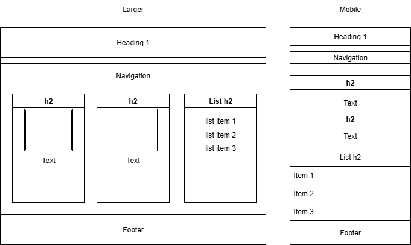

Purpose

This website's purpose is to be a educational source on the different types of rocks and gemstones. It will also compile helpful website links for rockhounding.
Scenarios:
- Users can find a compiled list of websites for rocks/gemstones.
- Users can also discover obscure rocks/gemstones to learn about.
- Users can find information about rocks/gemstones.
Wireframe and Color scheme:
- heading-color: rgb(102, 37, 133)
- accent-color: rgb(252, 240, 72)
- background-color-1: rgb(253, 242, 142)
- background-color-2: rgb(220, 201, 224)
- text-color: rgb(17, 14, 17)
- neutral: rgb(238, 238, 238)